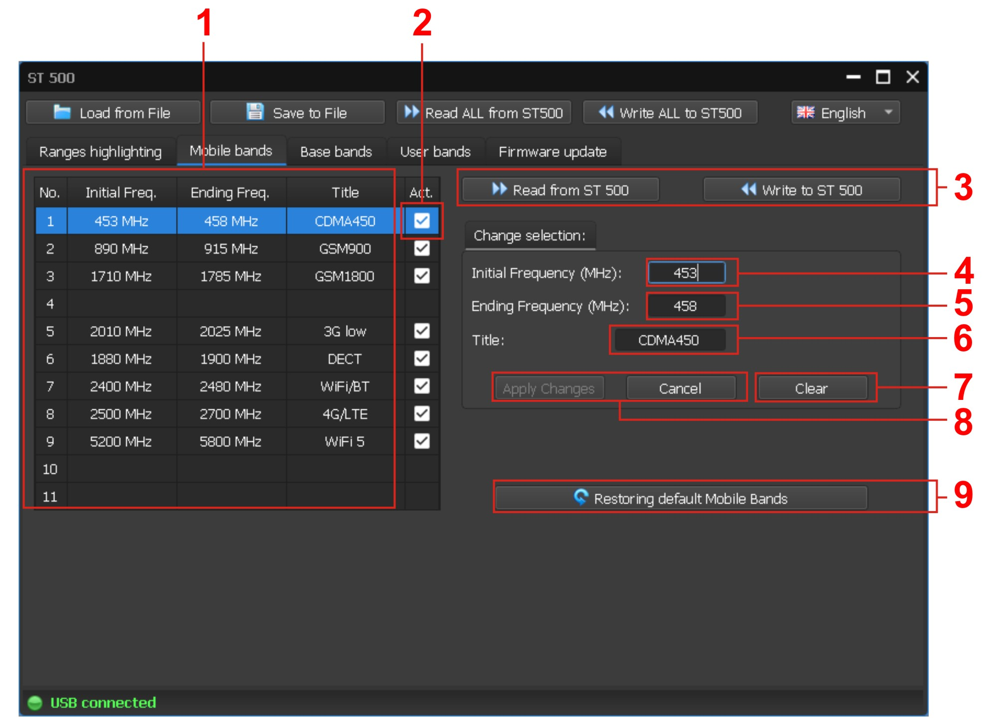
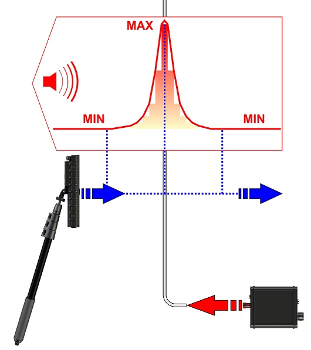

")
Methods and Ways of detection of data leakage channels. Detection kit. ST part 2
Part 2. Methods and Ways of detection of data leakage channels. Detection kit ST.
Detection Kit review
In this part I am going to describe all the devices included in the detection kit ST
In this part of the publication, we are going to review following devices that can solve the task of detection of the above-mentioned data leakage channels:
ST-402/403 “CAYMAN” Principally new non linear junction detector.
ST-500”Piranha” Operative multifunctional detection device
ST-301”Spider” Wire line Analyzer
ST-600 Combined detection device
Optic-2 Optical hidden cameras detector
ST-402/403”CAYMAN” Principally new non linear junction detectors.
ST-402 Cayman is intended to detect and locate
• eavesdropping electronics
• mobile phones and SIM cards
• any other devices utilizing semiconductor technology
ST-402/403 Cayman is a nonlinear junction detector, or NLJD. Instruments of this type employ active detection, i.e. they emit probing signals and analyze the return. Their primary search targets
are electronic devices, and those typically consist of circuit plates with conductive elements and various semiconductor parts connected to them, such as diodes, transistors, and microchips. The probing electromagnetic radiation induces variable electromotive forces in these loops, and electronic components with a non-linear current-voltage curve transform the initial signal into its higher frequency harmonics, which come back to the NLJD’s receiver. Higher harmonics can also be re-radiated by corroded metal or the so-called MOM-diodes, metal-oxide-metal structures brought about by contacting metal surfaces. However, these formations return somewhat different spectra than semiconductors. With Cayman one can distinguish with high probability between responses given by real semiconductors, and those ‘faked’ by MOM-structures or corrosion. Another important advantage is a confident detection of search targets behind partially shielding obstacles, which is
achieved by simultaneously radiating several frequencies within the 2-3GHz band and analyzing the composite picture of the reflection spectrum.
Operation Modes:
The NLJD Cayman has the following modes of operation:
Primary operation mode: SEARCH
Secondary operation mode: AUDIO
Service mode: ADAPT
The main operation mode named SEARCH is meant for detecting nonlinear targets and identifying them, based on the response levels as indicated by 16-segment bars. The auxiliary operation mode named AUDIO allows demodulating the response and listening to it through the built-in speaker or headphones. Use this mode upon detecting a response in the
SEARCH mode.
The ADAPT service mode is used to optimize the parameters in a given electromagnetic environment and thus maximize the effectiveness of search. Engaging this mode is necessary every time the device is switched on. It is advisable to pause during searches from time to time, to repeat this procedure. During adaptation, the antenna must be pointed away from electronics and large metal objects.
The difference between the two above mentioned devices is that the ST-403”CAYMAN does not have an extension rod connecting the control unit and the antenna.
The purpose of the two devices is also different. ST-402”CAYMAN” is designed for sweeping of office rooms. ST-403”CAYMAN” is designed form checking narrow and hard-to-reach places and for checking people.
Power Supply
ST 402 (ST 403) “Cayman” is powered by two Li-ion rechargeable batteries (type 18650).
4 batteries are included in the delivery package. The total run time on one battery charge is from 3 to 4 hours, depending on the modes employed.
“Cayman” monitors its battery charge status. A low battery charge will be signalled by blinking of the power-on LED and a warning sound. If the charge goes below the critical threshold, the device will switch off automatically.
Accumulator batteries can be charged with the charger included in the delivery package. The charging time of a fully discharged battery is 3 hours.
As these batteries are free of memory effect, incomplete charging is acceptable, but the running time will then be shorter.
Antenna Module

The antenna module comprises a receiver- transmitter unit, a control-display unit, and an aerial, all of which are assembled on a single platform and incorporated in a single body.
The antenna is mounted at the end of a telescopic arm by way of a hinge joint that allows adjusting the incline within the vertical plane along the rod’s axis.
To change the incline, unlock the clamp by turning its handle counter-clockwise then adjust and lock by turning the clamp handle in the clockwise direction.

Control Buttons
The mode-setting button (2).
A short press of this button alternates between “SEARCH” and “AUDIO”.
Holding it down for a few seconds will set the device to the ADAPT mode.
Buttons (1 and 3) are for tuning the device:
- in the “SEARCH” mode, increasing and decreasing the receiver sensitivity
- in the “AUDIO” mode, setting the definite frequency combination.

Batteries are placed in the battery compartment of the main unit. To install the battery, you need: - unscrew the battery compartment cover; - observing the polarity, insert two batteries into the battery compartment; - screw in the battery compartment cover.
Operation Modes
1. The main operation mode: “SEARCH”
The main operation mode is meant for detecting nonlinear targets and identifying them, based on the response levels as indicated by 16-segment bars.
2. Secondary operation mode: “AUDIO”
The auxiliary operation mode allows demodulating the response and listening to it through the built-in speaker or headphones. Use this mode upon detecting a response in the “SEARCH” mode.
3. Service mode: “ADAPTATION”
The mode is used to adjust the locator to the optimal parameters and to ensure the highest search efficiency in a specific electromagnetic environment. Use this mode is necessary after turning on the locator and periodically during the search.

Searching recommendations

The antenna head should be held at a distance of 5-15 cm from the surface.
The main unmasking feature of bugs is the presence of semiconductors (electronic components) and MOM (metal-oxide-metal) structures in them.
The operator should pay attention to the objects, where responses were received on the red (or red and blue simultaneously) LED gauge bars of the INPUT LEVEL indicator.
Each response must be identified.
If a powerful response is detected, it is recommended to reduce the gain of the receiver and determine the location of the source.
If a powerful response is detected on one of the LED gauge bar, a response on another LED gauge bar may be observed.
In this case, it is necessary to reduce the gain until the response is obtained only on one of the LED gauge bar. As a rule, a response with a large level is true, and with a lower level - a false response.
Any response observed on the red bar (or on both red and blue bar simultaneously) should be analyzed in the audio mode with the use of a test sound source.
If a response has been observed on the blue bar, it is advisable to perform audio analysis with the frequency combination #1, subjecting the target area to mechanical impact (tapping).
While probing, it is advisable to change gradually the distance between the antenna and target within 5-100 cm range.
Push square to switch from the “AUDIO” mode to “SEARCH”.
ST-500”Piranha” Operative multifunctional detection device
1.Multifunctional Search device ST-500”Piranha”
Purpose
ST500 is designed for detection of transmission channels of wireless and wired eavesdropping devices. Upon detection of wireless channel device enables localization of the source of detected signal. As seen from this description the purpose of ST500 analogical to the purpose of the previous model (ST031M), but later You will be able to make sure, that the purposes of the new device are significantly wider. For accomplishing the most effectiveness of the search operation it is recommended to use ST-500 in a set with non linear junction detector (ST-402 or ST-403), also with combined search device ST-600.
Delivery set
Device is supplied in a shockproof, water resistant case. Set consists of main unit, telescopic antennae, control sound emitter, charger and a set of various adapters and splitters, dedicated for connection to the wire lines.
On the picture You can see the delivery set of St-500.

Main Unit construction
The main unit Is a functionally finished device with autonomous power source. The electronic part of the device consists of:
• Digital procession circuit board
• analog circuit board
• Electronic switch circuit board
• display module
• Power source
• Control elements
I would like to mark, that all elements, except for analog circuit board are universal, that is, they can be used in other devices of the new line of devices ST without any changes in the construction.
All the electronic knots are connected on the metal chassis, which is inserted in to a two element plastic casing. With this the case makes the case is used as decoration.
The exterior of the main unit control elements and depiction is sho wn on the slide. 
Detection channels
For implementation of search functions of the ST500 features a four-channel detection:
• High frequency selective detector;
• IR signal detector;
• wired receiver;
•low frequency amplifier.
The first two channels are designed to detect wireless eavesdropping devices transmitting information on the radio and in the IR frequency range.
The second two channels are designed to detect eavesdropping devices that transmit information on power and low-current wire lines.
It should be understood that with the ST500 can only detect listening devices that have at the time of checking the transmission channel (i.e, working on the transfer).
Selective HF detector ST500
Selective RF detector is designed to detect radio transmitting listening devices operating in the frequency range from 20 to 6000 MHz.
Such devices include:
•radio microphone;
• radio stethoscopes;
• telephone radio transmitters;
• TV cameras with radio channel.
The main difference between this detection channel and a similar channel of ST031M is the extended frequency range.

The structure of the high-frequency channel of the detector (as well as other channels ST500) are composed of modes which in turn have specific functions.
Modes of the RF channel:
PANORAMA (current)
DIFFERENTIAL VIEW (Diff. mode)
AUTOMATIC mode
CONTROL AT FIXED FREQUENCY
MODE "THE CURRENT PANORAMA»
After switching on the high-frequency channel of the detector on the screen of the device displays the current view of the load range.

The green color on the screen shows the constant signals detected on the last pass. The pulse signals detected on the last pass are displayed in red. The maximum signals recorded on the previous passes (accumulated highs) are displayed in Burgundy.
The user has the ability to scale the viewing range, and change the gain.
The current panorama mode allows you to estimate the load of the radio band in the checked room and then decide on further search methods.
DIFFERENTIAL MODE
In differential mode, the levels of all signals received in the current panorama are taken as "O". And display signals only in excess of "zero". The view of the differential mode screen is shown on the slide.
Other RF detector modes (Differential panorama, automated mode, wireless networks mode) are activated from the current panorama mode. Thus, we can say that this mode is the main (basic) mode in the RF detector channel.
The constant signals detected on the last pass are displayed on the screen in lilac. Pulse signals detected on the last pass are displayed in yellow. The maximum signals recorded on the previous passes (accumulated highs) are displayed in burgundy.

Just as in the current panorama mode, in differential mode, the user has the ability to scale the viewing range, and change the gain.
The differential mode is used to distinguish signals originating in the test room from external signals and interference.
From the differential mode, it is also possible to activate the automatic mode and the "Wireless networks"mode.
Special functions in the current and differential panorama are the same.
FUNCTION MODES OF THE CURRENT AND DIFFERENTIAL PANORAMAS
The main function in "panoramic" modes is to control the signal at a fixed frequency.
To do this, set the screen marker to the desired signal and press the "ENT"button. The view of the screen when controlling the fixed frequency in panoramic modes is presented on the slide.
This function also allows you to control the signal level at a fixed frequency and listen to the demodulated signal through the built-in speaker or headphones.
This is used to localize the source of the detected signal.
In the energy localization method, we use a level indicator. At the same time, for accurate localization, it makes sense to use the setting "0"function.
In the acoustic method of localization we use the possibility of listening to the demodulated signal.
When monitoring a signal at a fixed frequency, you can change the bandwidth, gain, adjust the frequency, and use the oscilloscope to analyze the demodulated signal.
The manual method of detecting and localizing radio transmitters consists in the sequential use of the CURRENT and DIFFERENTIAL panorama modes and the signal control function at a fixed frequency.
AUTOMATED RF DETECTOR
In the AUTOMATED mode, signals whose amplitude exceeds the adaptive detection threshold are recorded.
The mode is switched from the DIFFERENTIAL mode or mode "CURRENT PANORAMA".
The signals are searched within the limits of the set viewing range taking into account the results obtained in the DIFFERENTIAL mode (if the AUTOMATIC mode was switched on from the DIFFERENTIAL mode).
All detected signals are assigned one of three signs: "NOT DANGEROUS", "DANGEROUS", "UNKNOWN". Default is set:
• "NOT DANGEROUS" – signals of mobile communication base stations;
• "DANGEROUS" – signals from mobile wireless devices;
• "UNKNOWN" – all the other signals.
Using software ST500, you can assign certain frequency ranges the status of "THREAT" or "DANGEROUS." If the received signals fall within the set ranges, they are marked in the table with the corresponding color.
The view of the automated mode screen is presented on the slide.
As you can see on the slide, the information of the automated search results is presented in the form of a table, which indicates the frequency and level of the detected signal. In addition, the current level of the selected signal is displayed. The selection of the signal with the help of a table cursor, in fact, is an implementation of the control function at a fixed frequency (the possibilities coincide with those presented for manual modes – to listen to the demodulated signal and monitor its current level).
In the automated mode table it is possible to change the bandwidth and gain and frequency.
The screen of the frequency fine-tuning function is presented on the slide.
MODE "WIRELESS & NETWORKS»
The "WIRELESS NETWORKS" mode is designed to detect signals of the most common digital communication standards.
The following functions are implemented in the mode:
• «MOBILE DEVICE»
• «BASE STATION»
• «CUSTOM LIST»
• "ANALYSIS OF DETECTED SIGNAL»
The device allows separate control of operating ranges of mobile devices and base stations (if such frequency separation is provided by the communication standard). By default, the ranges of mobile communication systems used in Russia are set. The composition and parameters of these ranges can be adjusted using the software "ST 500".
Enabling "use WIRELESS NETWORKS" is made from using PANORAMA mode or DIFFERENTIAL mode.
THE "MOBILE DEVICE»
When you enable "use WIRELESS NETWORKS" automatically activates the "CONTROL RANGES MOBILE DEVICES" (or "MOBILE DEVICE"). The screen view is shown on the slide.
Information on the results of the control is presented in the form of a table in which the activity of the radio medium is presented in the form of a red indicator. The accumulated highs are indicated by a Burgundy color.
In case of activity detection, in any of the ranges, the user has the opportunity to place the cursor on the corresponding row of the table and enable the "ANALYSIS of the DETECTED SIGNAL".
THE FUNCTION "BASE STATION»
The function screen is similar to the previous one and is shown on the slide.
When monitoring the range of base stations, as in the control of mobile devices, it is also possible to use the function of analysis of the detected signal.
FEATURE "USER LIST»
The option "CUSTOM LIST" allows you to control certain frequency ranges in which the most likely use of radio transmitting eavesdropping devices. The number of these ranges and their boundaries are also set by the ST500 software.
The function screen is shown on the slide.
As can be seen, the form of presentation of information and controls are similar to those presented earlier ("MOBILE DEVICES" and "BASE STATIONS").
"FEATURE ANALYSIS OF DETECTED SIGNALS»
Function "MONITORING RANGES of MOBILE DEVICES", "CONTROL of BASE STATIONS and CONTROL USER LIST" allows to evaluate the presence and level of signals. However, it is not possible to accurately determine the number of signals in each range and the frequency of the signals.
"Feature ANALYSIS of DETECTED SIGNALS" is intended to clarify the characteristics of the detected signal in the appropriate range. It allows you to determine the frequency of signals (in standard ranges) and explore them using the "OSCILLOSCOPE" function.
The function can be turned on from any screen of the "WIRELESS NETWORKS" mode. To do this, use the arrow buttons to place the cursor on the table row with the detected signal and press the "ENTER" button.
The screen of the device after switching on the function is presented on the slide.
SLIDE No. 14
The screen is divided into three "Windows”:
• signal strength indicator;
• OSCILLOSCOPE;
• SPECTRUM ANALYZER.
In the INDICATOR window displays the signal level on the frequency of the marker of the spectrum analyzer. The oscillogram and spectrogram are displayed in the corresponding Windows. Only one of them is active at the same time. It stands out with a white border. The active window is selected using the arrow buttons.
To localize the source of the detected signal, the "SETTING "0"function is implemented. When it is turned on, the level of the detected signal is taken as "zero" and the level INDICATOR shows the difference value of the signal (the color of the indicator will turn purple).
DIFFERENTIAL mode is intended to localize the source of the detected IR signal.
When the mode is activated, the detected signal level is taken as "zero" and the level indicator displays the difference level of the signal.
The color of the indicator in the differential mode is lilac.
INFRARED DETECTOR ST500
Another important difference between the ST500 and the previous ST031M model is the presence of an infrared detector channel. Technical characteristics of this channel are presented in working notebooks.
Channel "IR DETECTOR" is designed to detect eavesdropping devices that transmit information in the infrared frequency range.
The detector sensor is located on the top panel of the case.
The screen of the device after switching on the channel is presented on the slide.
Analysis of the detected signals is carried out using:
• graphical information (waveform and level indicator);
• acoustic information (headphones or built-in speaker).
In the process of searching for IR signals, the device can detect "false" signals. As a rule, it is RF aiming at the input stages of the IR detector. To detect a false signal detected, or real need to close the IR sensor window. If the signal is lost, so is the real IR signal, if the signal is not lost, so is the tip.
THE DIFFERENTIAL MODE OF THE IR DETECTOR
In the process of searching for IR signals, the device can detect "false" signals. As a rule, it is RF aiming at the input stages of the IR detector. To detect a false signal detected, or real need to close the IR sensor window. If the signal is lost, so is the real IR signal, if the signal is not lost, so is the tip. Wire Receiver ST500
“Wire Receiver” channel is designed for detection of eavesdropping devices signals (high frequency wired transmitters), transmitting information through power lines and low current lines in diapason of frequencies 100 kHz- 180 MHz.
The distance of information transmission through power lines of such eavesdropping devices, as a rule, does not exceed 500 meters in the area of one or two buildings, powered up from one substation grid.
When using telephone lines and LAN cables (at frequencies 5-30 MHz) the distance of information transmission exceeds 500 meters.
Sometimes in case of high frequency transmitters devices are used, using a coaxial lines or cable TV.
In the channel of the wired receiver there are two variants of works:
- check power lines;
- checking low-current lines.
A special adapter is used to connect to the power lines. Various cables, splitters and adapters are included in the ST500 to connect to different low-voltage lines.
A significant difference between the wired receiver ST500 from the same channel ST031M is the presence in the new device of an electronic switch. The switch is used when checking low-current lines, so when installing such lines, multi-wire cables are used.
Since there is only one input to connect to the wired lines in the ST500, pre-installation is necessary before starting the test.
Pre-settings of the wired receiver
When turning on the wire receiver channel, the user is offered to select the type of the line he is about to check: mains, or Low Voltage.

If the power line is selected, then the switch connects only two contacts( it corresponds to the connector setup of the adapter, used for connecting to the power line), and after this functions of controls of the switch are blocked. This block is being saved until next setup of the type of the line.
If the low Voltage line is assigned, then the user gets access to the switch control function.
After assigning the type of the checked line it is necessary to assign the frequency diapason, in which the signal search is going to be carried out.
Two variants are offered:
0,1 – 60МHz;
0,1 – 180МHz.

If there is no necessity of solving any specific tasks of searching in high frequency part of diapason of the receiver, then select the first diapason.
Checking power lines
As marked above, when checking power line the switch connects two contacts and then later on his functions are not used. It is marked because the power line uses only two contacts.
Structural scheme of the channel of the wired receiver when checking power lines is shown on the scheme.

When checking power lines in the wired receiver there are:
• Panorama mode;
• Differential mode;
• Automatic mode.
In all assigned modes the Fixed Frequency mode can be used, with possibilities:
• Fine frequency tuning
• Demodulation switch
• Analysis of the demodulated signal

Panorama mode
After the preliminary settings are made when checking the power lines, the device enters the mode of displaying the current panorama of the frequency range loading or "PANORAMA MODE".
As you can see, the panorama of the wired receiver is very similar to the panorama of the RF detector, we considered earlier.
Periodically updated graphical information displays the received signals in the set view band. Green and red colors show the constant and pulse components of the signals recorded during the last viewing cycle, respectively. The Burgundy color indicates the maximum signal levels recorded for the entire range viewing session.
A more detailed view of the range area of interest is possible. To do this, you need to set the marker on the signal under study or the middle of the range of interest and use the "UP" button to change the view band.
The view bar is displayed digitally and graphically on the screen.
When you change the view band previously accumulated information about the maximum values of the signals ("Burgundy" color) is not saved.
Differential Mode

DIFFERENTIAL mode is used to reduce the impact of external noise on the information signals and assess changes in the load range when connected to the test line of technical means.
Enable DIFFERENTIAL mode from a mode "PANORAMA".
The constant and pulse components of the signals recorded during the last viewing cycle are displayed in lilac and yellow colors, respectively. The Burgundy color indicates the maximum signal levels recorded for the entire range viewing session.
Fixed frequency mode
Function is designed for checking up signals detected in Panorama mode and Differential mode.
Turn on of the function is done from the Panorama mode of Differential mode. For this it is necessary to set the marker on the signal that interests You and press button “ENTER” the screen view is presented on the picture.
AUTOMATED MODE Automatic
In the AUTOMATED mode, signals whose amplitude exceeds the adaptive detection threshold are recorded.
Search signals are within the limits of the viewing range, taking into account the results obtained in DIFFERENTIAL mode (if the inclusion was made from the DIFFERENTIAL mode).
The screen view of the device is presented on the picture.
To fine-tune the signal frequency, place the cursor on the appropriate line of the table and press the "ENTER"button.
The frequency setting screen is displayed. Use the arrow buttons to set (10 kHz step) the frequency at which the signal level on the indicator will be the maximum.
If necessary, being in the table of automated mode, the user can explore the signal at a fixed frequency using an oscilloscope.
Checking the low current lines
The peculiarity of testing low-current lines with a wired receiver is that in such lines, as a rule, multi-wire cables are used. When checking them, it is necessary to investigate all possible combinations of pairs of wires to detect listening devices connected to them. To optimize the process of searching different combinations ST 500 is equipped with an electronic switch.
The structure of the wired receiver channel when checking low-current lines is presented on the slide.

As you can see, the presented structure differs from the previous structure only in the modes associated with the presence of the switch. Otherwise, the two presented channel structures (for power and low-current lines) are similar.
Switch control
After selecting the menu item "low voltage LINE", the device switches to the mode "CONTROL SWITCH". The screen displays a table that shows all the wire combinations of a multi-wire cable and the measured DC and AC voltages in each pair.
If the voltage (Vdc) in the connected pair exceeds ± 50 V, the corresponding cell will display ">50".
To search for a signal in Coca-either a pair of wires, you need to place the cursor on the corresponding row of the table and press "ENTER".
But before you start searching for signals, it makes sense to configure the switch.
Switch setup
This mode is used to configure the switch before testing multi-wire low-current cables.
The configuration is to determine the pin numbers of the 8-pin input connector of the switch that will be connected to the wires of the test cable.
This selects one of four standard connection options for RJ connectors:
RJ help
RJ-9. The 4P4C connector has four slats and four pins.
It is used to connect the handset to the telephone, it is the smallest connectors of the series RJ,.
RJ-11. Used to connect telephone cables and landline phones, plug RJ-11.
There are two types:
two contact, 6P2C
four-contact 6P4C
RJ-12 (RJ-25) have six slats and six pins, marked 6P6C, are used to connect system phones with six pin connector.
RJ-45, have eight slats and eight pins, marked 8P8C, are designed to connect telecommunication equipment: computers, sockets, network switches, patch panels.
These connectors are divided into several types, depending on the cable used:
RJ-45 connectors for single-core cable, where the conductor has a single conductor conductor.
RJ-45 connectors for multicore cable, where the conductor consists of several conductors intertwined.
RJ-45 connectors are universal, the contacts of these connectors have three knives, which allows them to be used for both single-core and multi-core cable.
Externally, the RJ-45 connectors for different cable are no different, the difference in the location of the contact blades that cut through the cable insulation.
Therefore, the most common types of RJ series connectors are:
8Р8С – an eight-connector (uses all 8 pins)
6P6C – six-position connector (all 6 pins are used)
6P4C – six-position connector (4 Central pins are used)
6P2C – six-position connector (uses 2 Central pins)
These four types are listed in the switch configuration menu as standard.
If the test cable is not equipped with connectors or connectors have a non-standard design, manual configuration of the switch is provided.
To enable the "switch SETUP" mode, press the "FUNC"button. The screen view of the device is shown in the picture
for different cable are no different, the difference in the location of the knife contacts that cut through the insulation of the cable.
The switch settings are not changed until you enter the Main menu of the device.
After you configure the switch, the view of the switch management screen changes.
As you can see, the switch pins that are not used in this type of connector are grayed out.
Modes and functions of the wired receiver when checking of low voltage line
After connecting the necessary pair of wires of the low current line all modes and functions of the wire receiver are analog to those, that were presented when checking power lines.
The difference is that in this case, there is a button that eanbles return to the switch control mode. It is necessary for that so that another pair of the multiwire cable could be connected.
Second difference is that there no button for amplification control, because it is unnecessary.
Третье отличие касается индикатора подключенной пары. При проверке многопроводного кабеля этот индикатор показывает, какая пара подключена. В то время как при проверке силовой линии на этом индикаторе отображается значение 1-2. The
Peculiarities of using of the wired receiver when checking power line and low current lines.
Power off on the shield. In the premises to physically disconnect consumers from the outlets. Get a panorama of the loading range in a disconnected line. To enable DIFFERENTIAL MODE. To differential the panorama of disconnected lines.
Power the line from the shield. Analyze the signals. If the signals do not appear or they are not dangerous, get the difference panorama of the powered network without consumers.
Connect one by one users controlling the appearance of signals in the difference panorama.
This course of action will ensure:
- interference and interference selection
- localization of the place where the dangerous signal is detected (line in the room or a specific consumer).
Low current line
When checking a low voltage cable it is recommended to use the differential mode for localization of the source of the detected signal.
Low frequency amplifier ST-500
The low frequency amplifier is designed for detection of electret and dynamic microphones wired channels of transmissions, transmitting information in speech diapason through low current lines.
Dynamic microphones – are most widespread type of microphones, the operation of which power supply is not necessary and in their construction there is no preliminary power amplifier. The information is transmitted through two wires (also through one pair of multiwire cable). The distance of transmission can be several hundreds of meters.
Electret microphones (one of the types of capacitor microphones) is widely used in eavesdropping devices due to their low cost and endurance in “field conditions”.
In the construction of the microphone there is a preliminary amplifier, for the operation of which the constant power supply of a certain polarity is required. It is reached by supplying ”Phantom current”( transmission of the information signals at the same time via this cable). Some models of electret microphones have autonomous power supply.
Structure of the LFA channel is shown on the picture below.
Three modes are implemented in unch:
• Switch control mode
• Switch configuration mode
• Automated mode
There is also a set of functions:
• Signal analysis using the oscilloscope (OSCILLOSCOPE)
• Analysis of a signal using the spectrum analyzer (spectrum analyzer)
• Gain control (GAIN)
• BIAS voltage adjustment (BIAS).
Switch control mode
Since in most cases when searching for low-frequency signals of eavesdropping devices it is necessary to deal with multi-wire cables, the main mode of the low-frequency amplifier is the control mode of the switch.
In the control mode of the switch, the gain control functions are available, as well as the supply of the offset voltage to the tested pair.
With manual control of the switch, the user can force any pair of wires involved. To do this, set the table cursor on the corresponding table row. This displays the measured values of DC and AC voltage in this pair. If the DC voltage is above 3V, the display color of this value will be red. If this value is greater than +/-50V, the corresponding cell will display > 50V.
If necessary, the user can turn on the automated mode of search of pairs of wires.
For analysis of the detected signals include functions of OSCILLOSCOPE and spectrum analyzer.
It is recommended that you configure the switch before you begin the line test. The configuration mode of the switch in the LFA is absolutely similar to the same mode of the wired receiver.
BIAS Voltage
For activation of electret microphones in LFA ST-500 there is a function of supply of BIAS voltage in to the connected pair. Two fixed options are available +30V and -30V.
Please note, that the BIAS voltage can be supplied to the line only, if the power supply is turned off ( or if the voltage does not exceed 3V). In this case the function BIAS is blocked ( and in the indicator of the connected pair window, following sign appears”OVER”).
When supplying BIAS voltage to the line the indication is shown in the window with green color.
Automatic mode
Automatic mode is designed for automatic browsing of all possible combinations of pairs of the multi wire cable.
To start the automatic mode up (press “Scan All”).
Switch connects in parallel way all pairs of wires, stopping for a couple of seconds on every pair (with this the table courser is set on the line, in accordance with connected pair).
The operator analyzes be ear the received signal.
If when scanning suspicious signals were detected, after the scanning cycle finishes it is necessary to analyze them using the “OSCILLOGRAPH” and “SPECTRUM ANALYZER”.
Spectrum Analyzer mode
Purpose of the program
The ST500 software is designed for:
Training and download ST 500 a priori information for analyzing the received signals when using the channel "SELECTIVE RF DETECTOR" AUTOMATED mode "WIRELESS & NETWORKS»:
• adjustment of "HAZARDOUS" and "NON-HAZARDOUS" frequency ranges;
• adjustment of ranges of mobile digital communication devices;
• the adjustment ranges of the base stations of mobile communication;
• updating the custom list.
Ensure update the firmware of the CPU of the main unit.
Marking the diapason
The mode is designed to set the boundaries of the ranges in which the most likely presence of "DANGEROUS" or "NON-DANGEROUS" signals.

"DANGEROUS" ranges:
• operating ranges of mobile digital communication devices;
• the working ranges of the mobile stations;
• known ranges used by listening devices
"NOT DANGEROUS" ranges:
• operating ranges of digital communication base stations;
• operating ranges of broadcast television and radio stations;
• ranges of operation of various standard radio facilities of the facility, etc.
"DANGEROUS" ranges are highlighted in red and "NOT DANGEROUS" - green.
After downloading the ST 500 information about "DANGEROUS" and "NOT DANGEROUS" bands, the signals are displayed in the table AUTOMATED mode SELECTIVE RF DETECTOR (section 3.6), are shown with corresponding colors.
If the signal is detected in the "DANGEROUS" range – it is highlighted in red, if in the "NOT DANGEROUS" range – green.
If the signal does not fall within any of these ranges, it is classified as "UNKNOWN" and highlighted in white.
For facilities where work is to detect eavesdropping devices is conducted regularly, it is recommended to have all files with the allocated ranges.
Correction of the wireless networks list
CORRECTION OF BASE STATIONS
The mode is intended for creation and correction of the list of frequency ranges in which base stations of the digital communication systems used in that region where search operations are carried out work.
This information is recorded in the memory ST 500 uses SELECTIVE RF DETECTOR mode "WIRELESS NETWORKS", "CONTROL RANGES of BASE STATIONS".
ADJUSTMENT CUSTOM LIST
The mode is used to create and adjust the list of frequency ranges in which the signals of interest to the user are located.
This information is recorded in the memory ST 500 uses SELECTIVE RF DETECTOR mode "WIRELESS NETWORKS", "CONTROL CUSTOM LISTS".
Firmware update
You can get information about firmware updates and download the latest version on THE website of LLC "St Group" in the "SUPPORT" section or in the company "SELCOM".
CONCLUSION ON ST500
So, You are familiar with the new multifunctional device ST500. With its purpose, functions, main detection channels and modes of operation.
What can you say by comparing the new and previous models of " PIRANHA»
• The ST500 extended the frequency range of the selective RF detector, thereby making it possible to abandon the external microwave detector. Also, due to the expansion of the range, it became possible to detect radio transmitters using the CB, VHF and FM bands.
Added channel to detect eavesdropping devices using infrared.
The device is equipped with a built-in electronic switch, which makes it much easier to check low-current multi-wire cables when working with a wired receiver and low-frequency amplifier
The presence of a built-in bias voltage source in conjunction with the presence of an electronic switch makes it easier to detect not powered electret microphones.
In addition, I would like to note that the set of detection channels and their service functions to date, ST500 has no analogues in terms of price-capabilities.
Before we begin our acquaintance with the new wire line analyzer, we would like to note that ST301 and ST500 are made according to the unified scheme. They have the same body, chassis, power supply units, display modules and most of the electronic modules.
In addition, as discussed below, two of the four ST301 detection channels are similar to the corresponding ST500 channels. Therefore, getting acquainted with ST301, we will not dwell on identical channels. Consider only their minor differences. Thus more time will be devoted to familiarization with the possibilities ST301, which are absent from ST500.
Purpose of ST301
ST301 is a multifunctional specialized analyzer of wire lines. It is designed to detect eavesdropping devices galvanically connected to power and low-voltage lines.
The peculiarity of this device is that it can be detected not only working wired listening devices (as in the ST500), but also "silent", i.e. do not have transmission channels at the time of verification. This is achieved by having at ST301 active search channels - wire nonlinear locator and reflectometer.
Delivery set ST301
As well as the rest of the previous model (ST300), ST301 comes in a plastic shockproof case with a built-in lodgment. Such packaging ensures the necessary safety of the main unit and other elements of the set
Additional features of the switch ST301 are that it does not involve 8 (as in the ST500), and 9 contacts. The ninth contact is the "body" of the input connector of the switch, also output to a separate socket. This allows all 8-wire cable wires to be checked against the cable shield. Thus, ST301 is able to detect eavesdropping devices that use a cable shield to organize the transmission channel. Such listening devices are "exotic", but since ST301 is a professional device for testing wired lines, we decided not to exclude the possibility of their detection.
As a result, the configuration mode interface of the switch is different. The slide shows the configuration mode screens of the ST301 and ST500 switches.
Low frequency amplifier
Low frequency amplifier ST301 is designed to detect transmission channels of wired microphones, galvanically connected to the tested low-current line.
The structure of the LFA ST301 channel is shown on the slide. As you can see, it is no different from the similar structure of the LFA ST500.
What's the difference of this canal from ST301 ST500 same channel?
First, there are additional features associated with only that voiced features of the electronic switch.
Second, the fact that ULF ST500 gain set "in the times", and ST301 to dB.
Third, the offset voltage in ST301 has two fixed values (+30V and -30V), and st301 provides step-by-step adjustment of this parameter (from -26V to +26V in step 2V).
Fourth, there is a different indication of the measured voltage (but this is only the difference in the design of the table).
The picture shows the switch control mode screens in the channel LFA ST301 and ST500.
Wire receiver ST301
Wired receiver ST301, controls, and display similar wired receiver ST500, who You've met previously. But still there are features. Let us review these features.
As with the ST500, the type of line to be tested (power or low-current) and the frequency range in which the signals will be searched for must be specified in the ST301 before the wired receiver begins the test.
The view of the wired receiver screen when checking the power line is shown on the picture.
As you can see the difference lies only in the ability to adjust the gain.
The view of the wired receiver screen when checking the low-current line is shown on the next picture.
The only difference is that the ST301 has gain control, and the ST500 has only the ability to turn on the attenuator (20dB).
Additionally, in ST301 ST500 and different mode settings of the switch, which was mentioned when we were introduced to the low-frequency amplifier ST301.
Non linear junction detector ST301
The NONLINEAR LOCATOR channel is designed to detect eavesdropping devices (including switched off and/or faulty) connected to the wired line in the test room and beyond.
The principle of operation of the nonlinear locator of the analyzer is similar to the principle of operation of a conventional nonlinear locator.
The built-in transmitter sends a probing signal to the test line. The receiver records reflected signals at frequencies of 2 and 3 harmonics. The presence of signals at these frequencies indicates the presence of nonlinearity or mom-structure in the line.
If the 2nd harmonic level exceeds the level of 3rd harmonic, with a high probability to a line of the electrically connected electronic device.
If the harmonic level 3 exceeds the harmonic level 2, it is likely that there is a mom structure in the line.
In practice, there are rare cases when the signal is received only at the frequency of 2 or 3 harmonics. As a rule, both signals are present in the presence of nonlinearity. Therefore, when detecting signals at frequencies of 2 and 3 harmonics (regardless of their level ratio), these lines should be investigated in more detail.
For correct operation of the analyzer in the NLJD mode, the line to be checked must be disconnected from all subscriber devices and other standard electronic equipment.
•For inspection of parallel connections the pair of checked cables must be cut off on the further end (blank check mode ”XX”).
•For inspection of cable for continuous connection the pair of checked wires must be closed up on the further end( short circuit mode)
When testing multiple-wire enclosure of the cable, equipped with RJ45 connectors, in the mode of short circuit you need to use a special device (dongle) kit ST301.
If a voltage greater than ±3 V is present on the installed pair, it is not possible to test this pair in the nonlinear locator mode. This situation is displayed by the "OVER" icon on the connected pair indicator. To check this cable, it is necessary to disconnect it from the power supply (disconnect the line to be checked).
Structure of the NLJD channel is shown on the picture.
NLJD screen is shown on the picture
The nonlinear locator screen is a table that shows all combinations of the multi-wire cable, as well as the levels of responses to the second and third harmonics of the probing signal.
Before checking in the channel of NL it is recommended to make adjustment of the switch as it was done in the channel of unch and so FORTH.
Non-linear locator ST301 is used in automated and manual modes. The automated mode is used when checking multi-wire cables. The operator receives the test results of all cable wire combinations.
In manual mode, the user is forced to connect a pair of wires of interest.
Also, the user can adjust the level of the probing signal.
The slide shows the result of testing a four-wire line when a listening device is connected to it in parallel. As already mentioned, the line must be disconnected from all consumers and open at the other end. As you can see on the slide, the connection is detected on pair 4-5 (this is the Central pair)
This slide shows the result of testing the same cable, but with the serial connection of a listening device. At the same time, we remember that all the wires of the cable at the opposite end must be closed ("all at all"). It is easy to see that the response is detected on all pairs in which the wire number 4.
Reflectometer ST301
As already mentioned in ST301, two channels are implemented to detect "silent" listening devices: a nonlinear locator and a reflectometer.
Considered only that the non-linear locator finds a listening device on an important telltale symptom of the presence of nonlinearity. But there may be situations when the composition of the listening device will be no non-linear elements (eg, dynamic microphone). In addition, an attacker can take appropriate measures to reduce the response of the nonlinear locator.
How to be in this case? No transmission channel. There is no nonlinearity in the line.
To detect such listening devices use special devices – reflectometers. If a nonlinear locator detects listening devices by the presence of nonlinearity in the line, the reflectometer uses another unmasking sign of the presence of a listening device – the presence of inhomogeneity in the line.
In fairness it should be said that the channel reflectometer ST301 is not a classic reflectometer. Rather, it is an automated detector of heterogeneity of the wires of the cable, using the method of reflectometry.
Reflectometry is a technology that allows to determine various characteristics of the medium under study by the reflection of the signal response. In our case, the medium under study is a pair of metal wires. The subject of the study is the response from the inhomogeneity in the wire line. To solve this problem, pulse reflectometry methods are used.
Pulse reflectometry is an area of measurement technology, which is based on obtaining information about the measured line by analyzing its reaction to the probing (disturbing) effect. Pulse reflectometry is used for metal cables of all types, as well as for fiber-optic communication cables.
How it works? The probing pulse generator sends a short electrical pulse to the cable line. The receiver of the reflected signals at regular intervals captures the signal from the line and displays their display device. Thus, a graph is plotted on the pulse reflectometer screen, where the amplitude of the reflected signal is displayed along the vertical axis, and time is displayed along the horizontal axis. Strictly speaking, the pulse reflectometer measures the time delay between the input action and the reflected signal. However, knowing the speed of electromagnetic wave propagation in the cable, it is possible to transform the time axis into the distance axis, which is done in all pulse reflectometers. The measurement results are presented in graphical form, called a trace.
What we do not like in classical reflectometer measurement?
The inconvenience of using standard reflectometers is primarily associated with the form of presentation of measurement results (i.e. reflectograms). The fact is that in practice it is necessary to work on multi-wire lines, and these devices are usually focused on the study of only one pair at a time. On the other hand, problems arise with the interpretation (decoding) of the reflectogram.
As You will see, our experts in the development of ST301, tried to use the method of reflectometry in an original way. The main attention was paid to make the use of the reflectometer clear and not difficult.
Рефлектометр ST301, like all other devices of this type, it measures two values: the level of response and response delay time determines the distance to the inhomogeneity from which this hail is reflected. But, unlike conventional reflectometers on the screen ST301 DISPLAYS not a graph (in the coordinates of the amplitude, distance), but a table with the same parameters.
In order to understand the logic of the work of the reflectometer ST301 you need to take a little away from the device itself and remember the physics.
To further understand the process, consider the cable model (or equivalent circuit). Any two-wire line can be described in terms of linear quantities: capacitance C, inductance L, active resistance R and inter-wire conductivity G. Thus, an infinite cable is modeled by an infinite chain of identical small pieces of unit length having the specified linear characteristics.

In the field of high frequencies, it is possible to neglect the active resistance R and conductance G. wireless.
In this case, the model line is somewhat simplified.

Wave resistance — it is the resistance that an electromagnetic wave encounters when propagating along a uniform line without reflection.

measure the level of response
determine the distance to the inhomogeneity.
And if the cable consists of several identical (defect-free) pairs that have the same length and are made of the same material? In this case, following our logic, all responses will have the same level and the distance to the inhomogeneity (end of pairs) will be the same.
And if the information about the testing of all pairs is reduced to one table, which will indicate the distance to the inhomogeneities with the maximum level of response in each pair (or combination) of wires? In this case, we get the so-called response structure.
It is the study of the structure of responses that is the best (from our point of view) way not only to understand whether there is heterogeneity in the line, but also to determine in which pair this heterogeneity takes place.
If the level of the probing signal and the wave resistance in each pair are the same, then we get the structure of the responses of the "ideal" cable. But, unfortunately, such a result when testing a real multi-wire cable will not be possible.
Why? First of all, because to achieve a situation where the wave resistance of each pair (wire combination) will be the same, it is almost impossible. For the most part, this is affected by the relative position of the wires in the cable.
Let's see how the mutual arrangement of wires will affect the wave resistance.
The capacitance of the two-wire line depends, among other things, on the distance between the conductors, which in this case can be considered as the capacitor plates. Then let's return to the presented formula of wave resistance.
An increase in the distance between the plates (in a multi-wire cable - between two wires) leads to a decrease in capacitance and an increase in the value of the wave resistance.
Thus, the mutual arrangement of conductors in a multi-wire cable will determine the wave resistance of different wire combinations.
Given that the level of the sounding signal of the reflectometer is the same for all tested wire combinations, it can be assumed that the response levels in different combinations of such cables will not be the same.
Now it makes sense to say what types of multi-wire cables are most commonly used indoors.
Fortunately, these types are not so much and they can be reduced to three groups:
round cable
flat cable
cable consisting of twisted pairs
In each of these types of cables, the location of the wires is different and it will determine the characteristic (reference) structure of the reflectometer responses.
CABLE TYPES AND THEIR REFERENCE STRUCTURE RESPONSES
In a round cable, the wires are located approximately at the same distance from each other, and the lengths of all wires are the same and coincide with the length of the cable. The electrical parameters (resistance, inductance, capacitance and conductance besprovodnaya) all combinations of the wires of such a cable will be about the same. The impedance of all wire combinations in this cable must also be the same. Most round cables have a impedance of 300 - 700 Ohms. Cables with such parameters are most often used to transmit low-frequency signals (telephone lines, broadcast, security and fire alarm, etc.).

Structure features
1. The distance to the discontinuity with the maximum levels of responses are the same. In a cable that has no defects, they correspond to the length of the cable.
2. The response levels are the same for all tested wire combinations.
In a flat cable wires of the same length (coinciding with the length of the cable) are arranged in a row. The capacity of the pairs formed by adjacent wires will be greater than that of other pairs of wires. The smallest capacitive connection will be at the wires located at the edges. This arrangement determines the different wave impedance in different wire combinations.
Flat cables are most often used to transmit low frequency signals
Example of the etalon structure of the six wire flat cable
1. The distance to the discontinuity with the maximum levels of responses are the same. In a cable that has no defects, they correspond to the length of the cable.
2. Response levels are different. The maximum levels are fixed on pairs of wires located nearby: 2-3; 3-4; 4-5; 5-6 (capacitive connections in these pairs are maximum). Levels are reduced by combinations with increasing distance between wires (capacitive coupling in these pairs are weakening). The minimum level is fixed on the pair formed by the extreme wires: 2-7.
Structural Peculiarities
1. The distance to the discontinuity with the maximum levels of responses different. This is due, firstly, to the different speed of signal propagation in connected and unbound pairs, and secondly, to the different physical length of the wires (different twisting step). In coupled pairs, the propagation velocity is less (greater response arrival delay), hence the measured distance value is greater. The difference between the readings on the connected pairs is determined by their different lengths, since they have a different twist step. In unbound pairs, the propagation velocity is higher, which means the measured distance value is smaller.
2. The levels of response to bound and unbound pairs are different. Maximum levels are fixed on connected pairs of wires 1-2; 3-6; 4-5; 7-8 (capacitive connections in these pairs are maximum). In unrelated pairs of capacitive coupling is weaker, which leads to lower levels of responses (usually less than half of the levels on connected pairs). In this case, the levels of responses to unrelated pairs are approximately equal to each other.
3. If the test involved pairs formed by the screen and one of the wires, in the absence of defects, the response levels in these pairs should be equal to each other. The distances to the inhomogeneity (or to the end of the cable) exceed the distances recorded on the connected pairs and are also equal to each other.
VELOCITY FACTOR AND ITS INFLUENCE ON THE ACCURACY OF MEASURING THE DISTANCE TO THE DISCONTINUITY
An important characteristic of the cable is the shortening factor (SF), the value of which is determined for each type. It shows how much the propagation speed of the electromagnetic signal in this type of cable is less than in vacuum. KU affects the accuracy of determining the distance to heterogeneity.
For round and flat multi-wire cables (regardless of the installed SF), the measured lengths of the pairs that have no defects will be the same.
In case of incorrect CU value, the measured length will be different from the real one.
Shortening coefficient (Velocity factor) of cables, consisting of twisted pairs.
The speed of propagation of the electromagnetic signal in the cable, consisting of Navitech pairs will be the same.
The speed of electromagnetic signal propagation in different pairs of cable consisting of twisted pairs will be different.
In twisted pairs, the signal propagation speed will be less than in "unrelated" pairs.
Thus, at one and the same prescribed KU will be determined by different values of the distance of the end of the cable:
• the distance to the end of the cable in unbound pairs is the same;
• the distance to the end of the cable in the connected pairs is different.
In addition to the different propagation speed, the difference of the obtained distance values will be affected by different lengths of wires in different twisted cables
Of course, the question immediately arises, where can we get a table of shortening coefficients? Here we regret to shrug: to cover all the cable products available on the market is not possible. While manufacturers of cable products do not Express interest in providing VF values for specific cables to support the operation of their products. It is best to determine the VF experimentally for the most common types of cables.
So, we got acquainted with the structures of the reference cables of the main types. Comparing these structures with the results of testing a particular cable can be a high probability and quickly determine whether there is heterogeneity in the line. That is the main valid method of multiple-wire enclosure of the cable by reflectometer ST301 is,
- first, in comparison of the received structure of responses with a certain standard;
- secondly, in comparison of the responses received on different pairs of cable.
For this type of work in the reflectometer ST301 provides an automated mode.
But what if we check the two-wire cable. In this case, there is no structure as such, and there is nothing to compare it with.
To check the two-wire cables, the manual mode of the st301 reflectometer is used.
As you can see, on the screen there are two tables SET1 and SET2. What are the differences between these tables from the table of the automated mode of the reflectometer, which we have read before?
The automated mode table shows only the distance to the inhomogeneity with the maximum response (and the level of this response is represented graphically).
The manual mode tables show the distances to all responses in the pair being tested, as well as the levels of these responses. In other words, we can see all the information in a particular pair.
Why are there two tables on the screen? Two tables are needed to compare the results when testing a line from two sides. The slide shows an example of this method of checking the cable.
In addition to checking the two-wire lines, the manual mode of the reflectometer is used for a detailed check of the "suspicious" pair of multi-wire cable.
The picture shows a diagram of the channel reflectometer ST301
THE ORDER OF TESTING WIRE LINES WITH CHANNEL REFLECTOMETER ST301
• De-energize the line to be checked. Disconnect consumers from the line. If you want to split the line into segments and check each segment separately.
• Correctly connect the device to the line (or its segment) to be checked)
• Correctly configure the switch (depending on the type of line and its connector)
• Set the appropriate velocity factor
• In the automatic mode of the reflectometer to obtain the structure of responses on all wire combinations.
• Compare the resulting response structure with the "reference" structure (for this type of cable)
• If the resulting structure is significantly different from the "reference", identify the pair that determines the change in structure (to analyze the change in structure)
• Check the "suspicious" pair from both sides. Determine the distance to the inhomogeneity.
Then with the help of other devices
• Use the tracer (for example, ST600) to determine the path of the line.
• By the known distance to the inhomogeneity and the path of the line to determine the place where this inhomogeneity can be.
• Conduct a physical search with disassembly of interior elements (if necessary).
Computer Software ST301
The program is designed to complement the capabilities of ST301 when used together with a personal computer. The program allows:
• manage all ST301 detection channels;
• save graphical information (spectrograms, waveforms, range load panoramas) obtained in different modes;
• save the test results of the lines in the regimes of nonlinear locator and OTDR;
• use the stored results as reference information for subsequent verification of a specific line;
• update the firmware of the main unit in case of a new version.
ST301 gives the opportunity for
• Detection of cable microphone transmission channels in low-current lines.
• Activation of non-powered electret microphones by supplying bias voltage (positive and negative polarity) to the line.
• Detection of high-frequency channels of listening devices in power and low-current lines.
• Detection of "silent" listening devices, galvanically connected to wired lines by the presence of nonlinearity.
• Detection of "silent" listening devices, galvanically connected to wired lines to change the structure of the responses of the sounding signal of the reflectometer.
THE MAIN ADVANTAGES ST301 IN RELATION TO THE PREVIOUS MODEL ST300
1. Usability:
• built-in switch;
• availability of various devices for checking coaxial cables (checking TV lines).
2. The ability to detect eavesdropping devices that use the cable screen to transmit information.
3. The possibility of using previously obtained information (the PC).
The totality of these possibilities suggests that the ST301 is a serious tool to check the various types of wire lines for the detection of broad-spectrum eavesdropping devices. Since this set of functions is typical for very expensive and complex search devices, it can be argued that the ratio of "price/capabilities" ST301 today has no analogues.
3. Combined search device ST600
As noted earlier, in the new St series, some detection channels integrated into previous models have been placed in a separate search device. It was called the ST600.
ST600 is a combined search device designed to perform two functions:
• detection of modulated low-frequency magnetic fields generated by digital eavesdropping devices;
• tracing wire lines, extending the reach of visual inspection.
These functions are performed by two different devices (magnetic field detector and tracer), which are integrated into a single body.
ST 600 can be used as a separate device or in combination with other search devices of the ST series:
- multifunctional search device ST 500;
- analyzer of wire lines ST 301;
- nonlinear locators series CAYMAN.
Delivery set of ST600
Design
Main unit
The main unit ST 600 is a receiving module operating in two frequency ranges:
- 0.3 – 10kHz
- 433kHz
The first range is used by the magnetic field detector to detect low-frequency radiation generated by working electronic devices. Reception of signals is carried out on a magnetic antenna located in the main unit.
The second frequency range is used by the detector receiver. Reception of signals is carried out on a differential electric antenna located in the main unit.
The main unit is powered from a stand-alone source (battery).
Also, the main unit is equipped with controls, display and connectors for headphones and charger.
On the body of the main unit there is an adjustable bracket that allows you to fix the main unit on the telescopic handle and fix it in the desired position relative to the examined surface.
Trace Locator generator
The generator is used for cable tracing (tracer MODE) and is designed to supply a test signal to the test wire line.
The generator is a functionally complete device with Autonomous power supply (battery). The appearance of the generator is presented on the picture.
Operation modes
Two operating modes are implemented in ST600:
- low-frequency magnetic field detector (hereinafter referred to as DETECTOR mode);
mode the LOCATOR.
At the same time the device can work only in one of the modes.
LOCATOR mode
The mode is designed to detect working digital eavesdropping devices. The principle of operation of the detector is to receive, convert and display electromagnetic signals arising from the operation of electronic devices.
Due to the low-frequency range used in the detector, various devices can be detected assembled in shielded enclosures.
Reception of signals is carried out on the built-in magnetic antenna tuned to the appropriate frequency range. When operating in DETECTOR mode, the main unit should be oriented as shown in Fig. 6 (the direction of the search object is indicated by arrows). The recommended speed of moving the main unit relative to the test object is 3-5 cm per second.
The signals are controlled by headphones (the built-in speaker is not used in the DETECTOR mode). Listening to the headphones rhythmic or periodic signals (clicks, whistles, trills, etc.) indicates the presence of near-working electronic equipment. The detection range of electronic devices in the DETECTOR mode is from 5 to 30 cm
TRACE LOCATOR mode
Mode is designed to detect the path of the wiring hidden behind the fixed elements of the decoration and padded in sealed cable ducts. This function is in demand when searching for wired eavesdropping devices.
The mode is realized by supplying a test signal to the wired line and receiving this signal using a contactless sensor.
The test signal is generated and fed into the wireline using a generator. As a test, a signal at a fixed frequency of 455 kHz, modulated by a two-tone low-frequency signal is used. To compensate for the attenuation of the test signal in the generator provides power adjustment.
The generator is equipped with two output connectors. If the line being tested is equipped with RJ plugs or sockets, the RJ45 socket is used. In this case, the test signal is supplied to the contact number 4 of the specified socket.
If you check the cable, not fitted with connectors, use a socket p. 6, Fig. 3 and the probe with the crocodile clip. For the correct operation of the mode, the tracer generator must be connected to the ground line (or to the Coca-or extended metal structure in the room) with the help of a cable of p. 8, Fig. 1.
Options for connecting the generator to different types of lines are presented on the picture.
Control of the test signal is carried out in a contactless manner using a receiver located in the main unit. The operator can listen to the received test signal using headphones or through the built-in speaker.
The detector receiver is equipped with a differential electric antenna located in the main unit. The use of such an antenna involves two variants of the orientation of the main unit relative to the search object:
- the side faces of the main block are perpendicular to the surface plane (direction 1)
- the front surface of the main unit is parallel to the search plane (direction 2).
The location of the antennas of the detector receiver is marked in yellow on the slide. Based on this, depending on the orientation of the main unit relative to the search plane, there will be two possible options for indicating the detected cable.

The picture shows an indication of the test signal when the front surface of the main unit is oriented parallel to the search plane. In this case, the signal is received simultaneously on both antennas. The value of the signal level received on the first antenna is subtracted from the value of the level received on the second antenna (differential signal processing mode is implemented). That is, as the receiver approaches the traced cable, the signal level received on the near (to the cable) antenna will be significantly higher than on the far one. When the distance from the cable to both antennas is equal, the signal levels will also be equal. In this case, the difference between the measured levels will be close to zero. This situation occurs if the receiver is located strictly above the test cable. Thus, the place where there is a "failure" between the two maxima of the received test signal is the place where the cable passes.
In this case, the maximum of the received test signal will be observed strictly above the place where the traced cable is located.